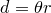

By convention, the SI system of units does not have a base unit of angle: instead, the radian is considered to be a dimensionless unit. There are some strong mathematical reasons why this makes sense, since it makes it possible to write equations such as
|  |
and
![\[ x = \exp (a+i\theta ), \]](images/img-0103.png) |
which would otherwise have to be written as, for example,
in order to be strictly dimensionally correct.
However, it also has some disadvantages since some physical quantities such as fluxes per steradian are measured per unit angle or per unit solid angle, and the SI system traditionally1 offers no way to dimensionally distinguish these from one another or from quantities with no angular dependence. Thus, in some branches of science, it is very useful to be able to keep track of dimensions of angle in a way incompatible with a system in which angles are fundamentally dimensionless.
In order to be useful in both mathematical and physical contexts, PyXPlot provides a switch which can be changed using the commands:
set unit angle dimensionless set unit angle nodimensionless
By default, angles are treated as being dimensionless, and expressions such as are considered to be dimensionally correct. Inverse trigonometric functions such as asin return dimensionless numbers measured in radians. The unit of the degree is equal to the dimensionless constant  . However, when angles are set to have physical dimensions, the inverse trigonometric functions return values with dimensions of angle, and the above expression must be written as in order to be dimensionally correct. Nonetheless, the function and all of the trigonometric functions continue to accept not only quantities with dimensions of angles, but also dimensionless numbers, as inputs.
. However, when angles are set to have physical dimensions, the inverse trigonometric functions return values with dimensions of angle, and the above expression must be written as in order to be dimensionally correct. Nonetheless, the function and all of the trigonometric functions continue to accept not only quantities with dimensions of angles, but also dimensionless numbers, as inputs.
Footnotes